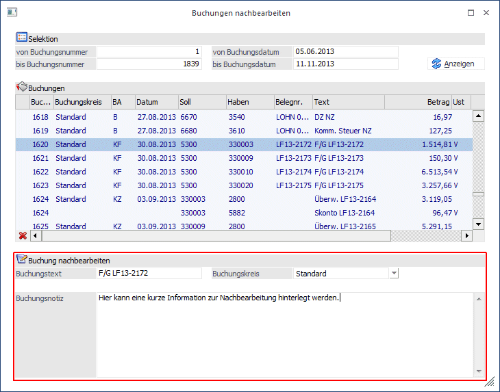
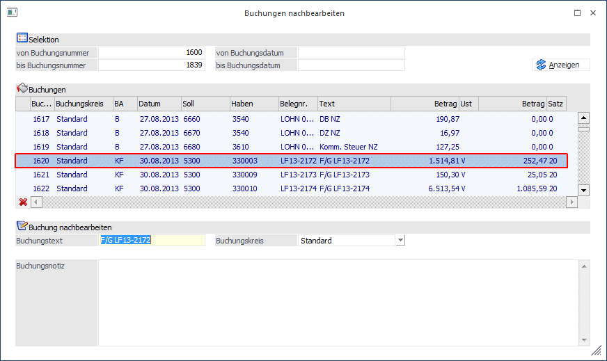
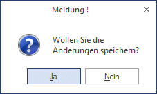

Unter dem Menüpunkt
1 Buchen
1 Buchen
1 Buchungen nachbearbeiten
können für bestehende Buchungen bestimmte Felder nachträglich bearbeitet bzw. geändert werden.
Folgende Felder können über diesen Menüpunkt geändert werden:
ü Buchungskreis
ü Buchungstext
ü Buchungsnotiz
Hinweis
In der Auswahllistbox des Buchungskreises werden nur jene Buchungskreise angezeigt, für die der Benutzer die Berechtigung hat.
Jene Buchungen für die der Benutzer keine Berechtigung hat, werden in der Tabelle nicht angezeigt.

Die gewünschten Buchungen werden in der Tabelle, angezeigt. Es kann auf die Buchungsnummer, auf das Buchungsdatum und auf einen Filter selektiert werden.
Achtung
In der Tabelle ist kein Wert editierbar und es werden keine Stornobuchungen angezeigt.
Außerbücherliche Buchungen werden in der Tabelle andersfarbig dargestellt.
Im unten stehendem Fenster werden für die aktuell selektierte Buchungszeile die änderbaren Felder angezeigt und können dort editiert werden. Sobald in einem der Felder ein neuer Wert eingetragen wird, wird die Tabelle aktualisiert und mittels Icons angezeigt, dass ein Wert in der Zeile geändert wurde.

Hinweis
Der Buchungstext und die Buchungsnotiz können für jede Zeile einzeln editiert werden, der Buchungskreis gilt für alle Zeilen einer Buchung und kann daher nur für die erste Zeile geändert werden. Beim Speichern wird der Buchungskreis, aber in allen Zeilen übernommen.
Mit dem OK-Button werden die Änderungen ins Journal zurückgeschrieben. Beim Schließen des Fensters und beim Neu-Füllen der Tabelle wird geprüft, ob es nicht gespeicherte Änderungen gibt und es wird eine entsprechende Meldung ausgegeben.

Mit dem "Änderungen verwerfen"-Button im Fußteil der Tabelle, können die ursprünglichen Werte für die aktuelle Zeile wiederhergestellt werden.
Mittels Doppelklick auf die Buchungsnummer wird die Buchungsinfo geöffnet.
Werden festgeschriebene Buchungen editiert, so wird eine entsprechende Meldung ins Audit geschrieben.